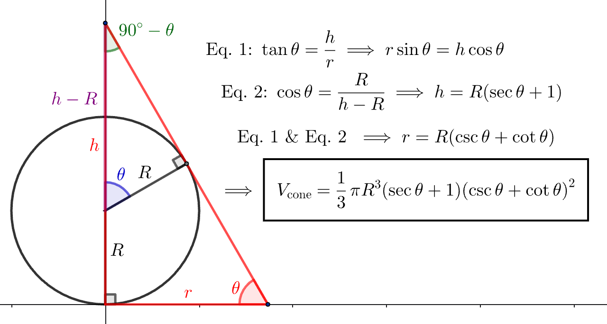
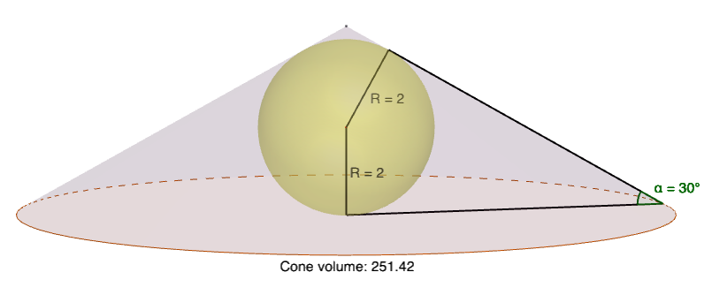
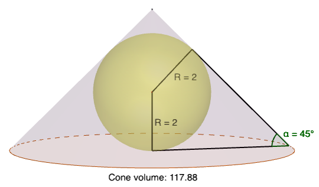
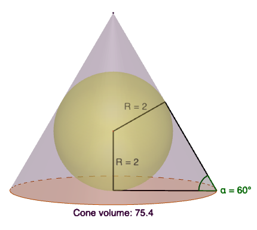
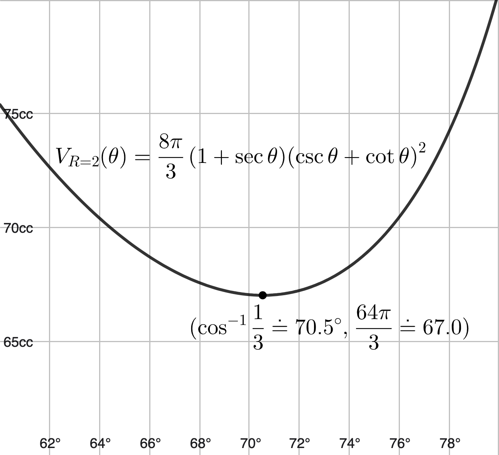
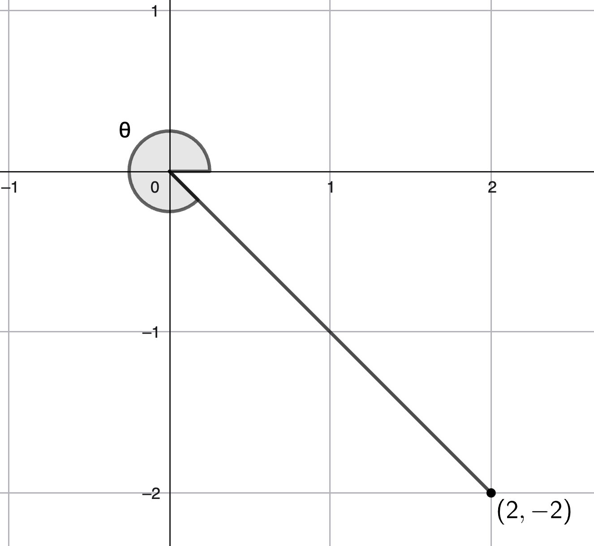
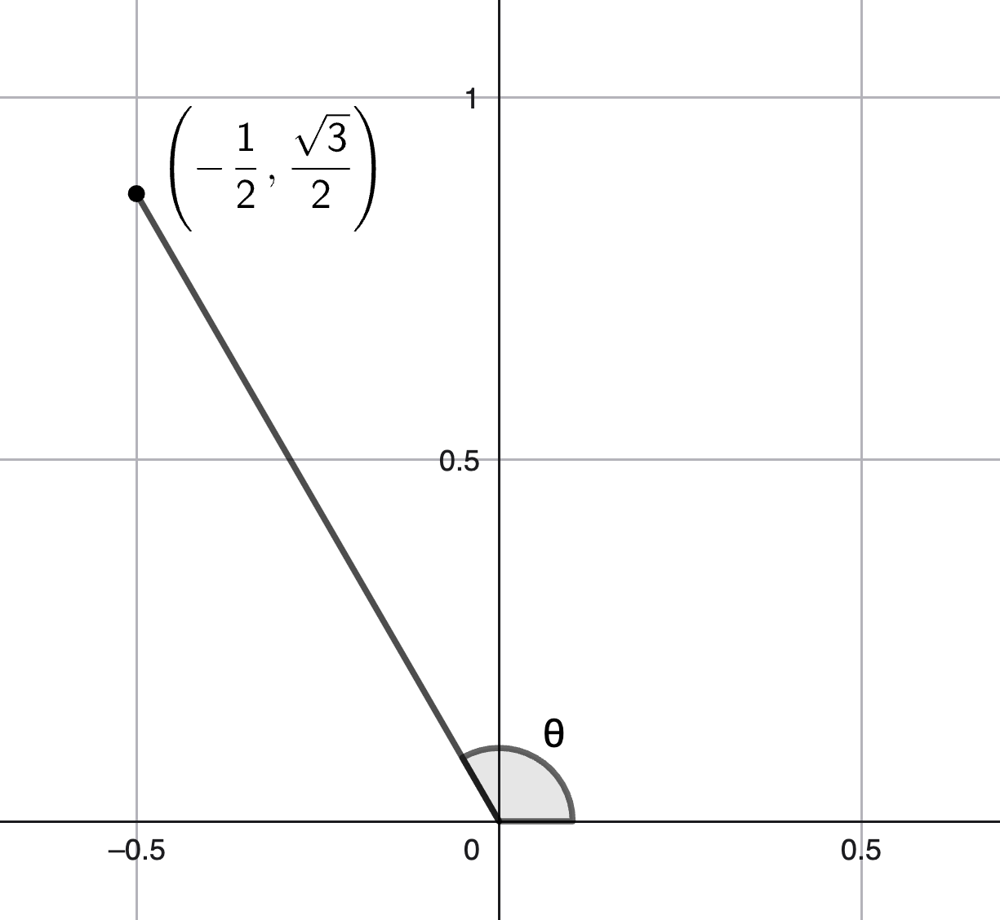
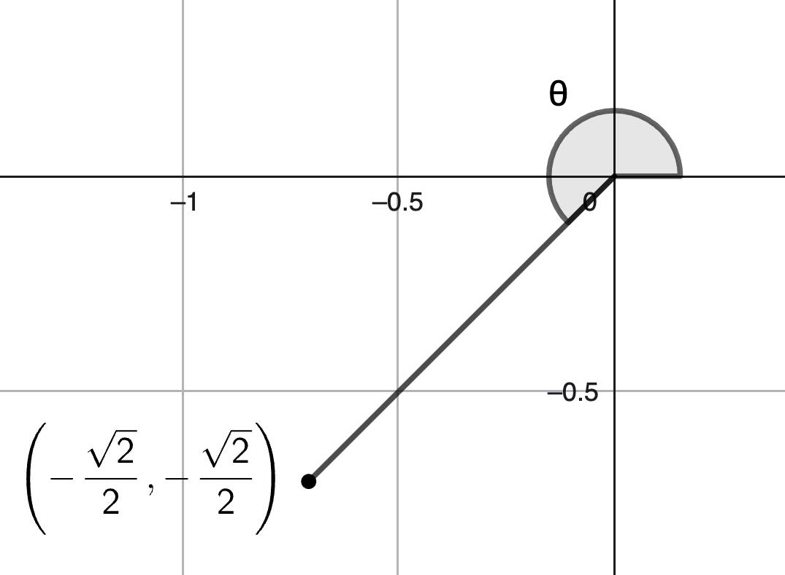
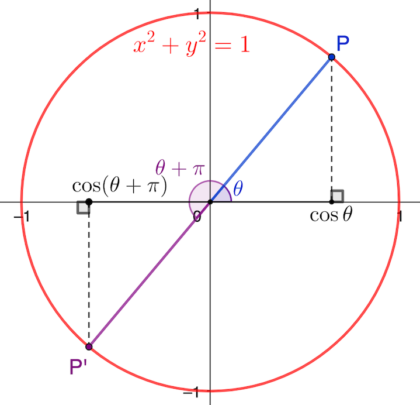

\(\definecolor{red}{RGB}{255,0,0} \definecolor{orange}{RGB}{245, 165, 0} \definecolor{yellow}{RGB}{255,215,0} \definecolor{green}{RGB}{0,255,0} \definecolor{indigo}{RGB}{0,0,255} \definecolor{violet}{RGB}{138,43,226} \definecolor{black}{RGB}{0,0,0} \require{cancel} \newcommand{\blksq}{\blacksquare} \newcommand{\box}{\boxed} \newcommand{\Frac}{\displaystyle \frac} \newcommand{\t}{\theta} \newcommand{\chec}{\checkmark} \)
Notes: These solutions are provided "as-is," for informational purposes only, with no warranty of any kind, expressed or implied, including that of correctness, adequacy, and/or suitability for any purpose, whatsoever. Corrections are welcome and should be emailed to selectedsolutionsdotnet@gmail.com.
Purple font indicates clicking on the text will return you to your prior place; a \(\blksq\) marks the end of a proof.
| Section 1: Angles and Their Measure | |||||||||
|---|---|---|---|---|---|---|---|---|---|
| 1.28 | 1.32 | 1.38 | 1.44 | 1.50 | 1.54 | 1.62 | 1.70 | 1.74 | 1.78 |
| 1.82 | 1.86 | 1.90 | 1.96 | 1.100 | 1.104 | 1.108 | 1.112 | 1.116 | |
| Section 2: Right Triangle Trigonometry | |||||||||
| 2.20 | 2.24 | 2.28 | 2.32 | 2.36 | 2.52 | 2.58 | 2.66 | 2.73 | 2.76 |
| 2.78 | |||||||||
| Section 3: Trigonometric Functions of Acute Angles | |||||||||
| 3.11 | 3.16 | 3.22 | 3.28 | 3.34 | 3.38 | 3.42 | 3.48 | 3.52 | 3.56 |
| 3.64 | 3.68 | 3.74 | 3.78 | 3.84 | 3.92 | ||||
| Section 4: Trigonometric Functions of Any Angle | |||||||||
| 4.16 | 4.18 | 4.20 | 4.28 | 4.30 | 4.32 | 4.36 | 4.40 | 4.88 | 4.94 |
| 4.100 | 4.112 | 4.114 | |||||||
In tutoring trigonometry (all math really, but especially trigonometry) I am often asked something like "How do you remember all these formulas/identities?" I always answer: "I don’t, I remember where to look them up" (which, in 2026, is ridiculously easy to do on the internet: just type "trig identities" into any browser and the default search engine will, in a matter of microseconds—indeed, before you even finish typing it in!—return umpteen lists of trig identities). However, remembering them, especially when you’re just learning them, isn’t really the issue; the issue is proper use of them: the whole point of the trig identities, etc., is to reduce complicated‑looking problems to simpler problems, in a—quite literally—formulaic way. The issue is how to use the formulas to "plug-and-chug," and a big stumbling block toward that goal is recognizing which formulas/identities are applicable in a particular situation. This is exacerbated by the plethora of new formulas being thrown at you in rapid succession.
The strategy I recommend for dealing with this problem, as tedious as it sounds, is this: at the top of each page of work, begin by re‑copying all the formulas/identities you are responsible for learning in that lesson (at the very least: the more you write out, the more you will retain what you’ve taken the time to write out, so by all means, write out identities from earlier lessons as well, especially if you find that you’re still struggling with recognizing them in problems you’re working on; for what it’s worth here, I also emphasize this strategy when learning the properties of exponents and logarithmic identities—basically, any situation in which you’re being required to learn a lot of new synoptic information in a short period of time). To set the example and make abundantly clear what I mean, I will begin each section below with a re‑statement of the formulas/identities being "drilled" in that section (as well as re‑statement of the specific formulas/identities being used in each particular exercise). By doing so, I hope to drive home to the student that the way to "memorize" this material is by written repetition (even if it sometimes seems excessive).
To convert the decimal portion of degrees to minutes and seconds: Multiply the decimal (fractional) part by 60: the integer (non-fractional) part of the result is the number of minutes; then multiply the fractional part of that result by 60: the result, including any remaining decimal fractional part, is the number of seconds.
Example: \(\displaystyle 0.0853°\times \frac{60’}{1°} = 5.118’,~0.118’ \times \frac{60’’}{1’} = 7.08’’\), so \(0.0853°= 0°~5’~7.08’’\).
To convert from degrees, minutes, seconds to decimal degrees: divide the number of minutes by 60; add the number of seconds divided by 3600; then add that sum to the number of degrees.
Example: \(\displaystyle 23°~34’~23.45’’ = 23°+~34’ \times \frac{1°}{60’} + 23.45’’ \times \frac{1°}{3600’’} \doteq 23° + 0.5666667° + 0.00651389° ~\doteq 23.573181°\).
Also: 1 circle = 360°, so 1° = \(\displaystyle \frac1{360}\)‑th of a circle, 1 straight angle = half a circle = 180°, 1 right angle = one‑fourth of a circle = 90°.
Radians: radians measure angles using the number of radii (plural of radius) required to "measure" the circular arc "spanned" by the angle: arc length \(s= r\t\), where \(r\) is the radius of the circle and \(\t\) (the Greek letter theta, pronounced thay-ta) is the "subtended" angle, measured in radians; in particular, if \(r=1\), then arc length and radian angle measure are one and the same. (The consequences of this are why radians are the preferred angle measure in mathematics, most of physics, and theoretical engineering). To convert from decimal degrees to radians: multiply by \(\displaystyle \frac{\pi\text{ rad}}{180°}\).
Example: \(\displaystyle 74.248° \times \frac{\pi\text{ rad}}{180°} \doteq 1.295872\) rad (to convert from \(°~’~’’\) to rad, it’s easiest to first convert to decimal degrees).
To convert from radians to degrees: multiply by \(\displaystyle \frac{180°}{\pi\text{ rad}}\).
Example: \(\displaystyle 1.57079633 \text{ rad} \times \frac{180°}{\pi\text{ rad}} \doteq 90.00000018°\). (However, we will typically express radian angle measure as a multiple of \(\pi\), e.g., \(2\pi\text{ rad} =\) a whole circle, \(\pi\text{ rad} = \) a straight angle, \(\displaystyle \frac{\pi}2\text{ rad} =\) a right angle, etc., providing a decimal approximation only when necessary/requested.)
Area of a "sector" of a circle of radius \(r\) spanned by angle \(\t\): \[A = \frac12r^2\t\] where \(\t\) must be in radians.
Special Angles: For triangle trigonometry, the most important special angles are:
| Degrees | 30 | 45 | 60 | 90 | 120 | 135 | 150 |
|---|---|---|---|---|---|---|---|
| Radians | π/6 | π/4 | π/3 | π/2 | 2π/3 | 3π/4 | 5π/6 |
We will learn the trigonometric function values of other special angles in Section 4.
Revolutions (revs; also called cycles): especially used in physics and engineering, one rev equals one one full circle, giving the conversion factors \((360° / 1 \text{ rev}) = (2\pi\text{ rad}/1\text{ rev})\); Conversion examples: 0.25 rev \(\times~(360°/1\text{ rev}) = 90\)°; \(\displaystyle\frac{2\pi}3\text{ rad}~\times \frac{1\text{ cycle}}{2\pi\text{ rad}} = \frac13\text{ cycle}\).
Constant (or average) speed around a circle: for a circle of radius \(r\), "linear" speed \(v = \displaystyle \frac s t\), where \(s = r\t\) is the length-of-arc traveled in time \(t\) (\(\t\) must be in radians); "angular" speed \(\omega\) (the Greek letter "omega," pronounced oh-may-guh) \(=\displaystyle \frac{\t}{t}\), where \(\t\) need not be in radians (it is common to use revs, e.g., revolutions per minute (rpm) or cycles, e.g., cycles per second (Hz) in physics, for example); note that \(\omega\) doesn’t depend on \(r\). Combining \(\displaystyle v = \frac{r\t}t\) and \(\displaystyle \omega = \frac{\t}t\) we get \[\box{v = r\omega \iff \omega = \displaystyle \frac{v}{r}}\] but in this form, \(\omega\) does need to be/will end up in units of radians (per unit time). Example: an object experiencing "uniform" (i.e., constant speed) motion around a circle of radius 12,900 kilometers with a linear speed of \(1075\pi \doteq\) 3377 kilometers per hour, has an angular speed \(\omega = \displaystyle \frac{1075\pi\text{ kph}}{12,900\text{ km}} = \frac{\pi}{12}\frac{\text{radians}}{\text{hour}} \times \frac{1\text{ rev}}{2\pi\text{ rads}} = \frac{1\text{ rev}}{24\text{ hrs}} = 1\) revolution per (Earth) day.
Solved Problems
1.28) Convert \(98°22’45’’\) to decimal degrees, rounded to two decimal places.
Sln: \(\displaystyle 98°22’45’’ = 98° + \left(22’ \times \frac{1°}{60’}\right) + \left(45’’ \times \frac{1°}{3600’’}\right) = (98 + \frac{11}{30} + \frac1{80})° \doteq \box{98.38°}\).
1.32) Convert \(29.411\)° to degree minute seconds, rounded to the nearest second.
Sln: \(\displaystyle 0.411°\times \frac{60’}{1°} = 24.66’,~0.66’ \times \frac{60’’}{1’} = 39.6’’\) so, to the nearest second, \(29.411° = \box{29°~24’~40’’}\).
1.38) Convert \(330\)° to radians, expressing the result as a multiple of \(\pi\).
Sln: \(\displaystyle 330° \times \frac{\pi\text{ rad}}{180°} = \box{\frac{11\pi}6\text{ rad}}\).
1.44) Convert \(-225\)° to radians, expressing the result as a multiple of \(\pi\).
Sln: \(\displaystyle \frac{225}{180} = \frac{5}{4}\), so \(-225°= \box{-\frac{5\pi}4\text{ rad}}\).
1.50) Convert \(\displaystyle -\frac{2\pi}{3}\) radians to degrees.
Sln: \(\displaystyle -\frac{2\cancel{\pi}}{3}\cancel{\text{rad}} \times \frac{180°}{\cancel{\pi}\cancel{\text{rad}}} = \box{-120°}\).
1.54) Convert \(\displaystyle \frac{5\pi}{12}\) radians to degrees.
Sln: \(\displaystyle \frac{5\cancel{\pi}}{12}\cancel{\text{rad}} \times \frac{180°}{\cancel{\pi}\cancel{\text{rad}}} = \box{75°}\).
1.62) Convert \(-51\)° to decimal radians, rounded to two decimal places.
Sln: \(\displaystyle -51° \times \frac{\pi\text{ rad}}{180°} = -\frac{51\pi}{180}\text{ rad} \doteq \box{0.89\text{ rad}}\).
1.70) Convert \(\sqrt{2}\) radians to decimal degrees, rounded to two decimal places.
Sln: \(\displaystyle \sqrt2\cancel{\text{rad}} \times \frac{180°}{\pi\cancel{\text{rad}}} = \left(180\sqrt2/\pi\right)\!° \doteq \box{81.03°}\).
1.74) \(\displaystyle \frac14\) radian corresponds to a circular arc length of 6 centimeters: what is the radius of the circle?
Sln: \(s = r\t, \t\) in radians. We have \(s = 6\) cm, \(\t = 0.25\) rad, so \(6 = 0.25r \implies r = \box{24\text{ cm}}\).
1.78) What is the arc length corresponding to an angle of 120° in a circle of radius 3 meters?
Sln: Method 1: \(s=r\t,\t\) in radians, so \(s = \displaystyle \frac{3\text{ m}}{1\cancel{\text{rad}}} \times \left(120\cancel{\text{degrees}} \times \frac{\pi\cancel{\text{ rad}}}{180\cancel{\text{degrees}}}\right) = 2\pi\text{ m} \doteq \box{6.28\text{ m}}\).
Method 2: \(120°= 1/3\)‑rd of a full circle, so \(s = \frac13(2\pi)(3\text{ m}) =\box{2\pi\text{ m}}\).
1.82) \(\displaystyle \frac14\) radian corresponds to a circular sector area of 6 square centimeters: what is the radius of the circle?
Sln: \(A = \frac12r^2\t, \t\) in radians. We have \(A = 6\) cm\(^2, \t = 0.25\) rad, so \(6 = \frac18 r^2 \implies r = \box{\sqrt{48} \doteq 6.93\text{ cm}}\).
1.86) What is the sector area corresponding to an angle of 120° in a circle of radius 3 meters?
Sln: As with Exercise 1.78, we can either first convert \(\t\) to radians, or we can recognize that 120° is one‑third of a full circle, and thus the area must be \(\frac13 \pi (3\text{ m})^2 = \box{3\pi \doteq 9.42\text{ m}^2}\).
1.90) To three decimal places, what is the arc length and sector area for an angle of 50° in a circle of radius 9 centimeters?
Sln: Whenever a portion of a circle is given in degrees and we need to find arc length and/or area, I prefer to figure it out as the fraction of the whole circle times the circle’s whole circumference and/or area: 50° = 50/360 = 5/36‑ths of a whole circle, and for a whole circle of radius 9 cm, the circumference is 18π cm and the area is 81π cm2, so the required arc length is \((5/36)(18\pi) = \box{2.5\pi \doteq 7.854 \text{ cm}}\) and the required area is \((5/36)(81\pi) = \box{11.25\pi \doteq 35.343\text{ cm}^2}\).
1.96) Through what angle should a sprinkler rotate to cover a circular sector of radius 15 yards and area 100 square yards?
Sln: \(A = \frac12 r^2 \t, \t\) in radians, so: \(100\text{ yd}^2 = \frac12 (15\text{ yd})^2 \t \implies \t = \displaystyle \frac{200}{225} = \box{\frac89 \text{ rad}} \times \frac{180°}{\pi \text{ rad}} = \box{\frac{160}{\pi} \doteq 50.9°}.\)
1.100) The wheels of a car have a radius of 15 inches and are turning at a rate of 3 revolutions per second: in inches per second and miles per hour, how fast is the car moving?
Sln: \(\displaystyle 3 \frac{\cancel{\text{rev}}}{\text{sec}} \times 2\pi(15)\frac{\text{ in}}{\cancel{\text{rev}}} = \box{90\pi \doteq 282.7\text{ ips}}\). \(\displaystyle 90\pi \frac{\cancel{\text{in}}}{\cancel{\text{sec}}} \times \frac{1 \text{ mi}}{(12)(5280)\cancel{\text{in}}} \times \frac{3600 \cancel{\text{sec}}}{1 \text{ hr}} = \box{\frac{225}{44}\pi \doteq 16.06\text{ mph}}\).
1.104) At 40° latitude, the distance from a point on the surface of the Earth to its axis of rotation is approximately 3033.5 miles: what is the linear speed of such a point?
Sln: \(v = \omega r, \omega\) in radians per unit time; \(r = 3033.5\text{ mi}, \omega = \displaystyle \frac{1\cancel{\text{rev}}}{24\text{ hrs}} \times \frac{2\pi\text{ rad}}{1\cancel{\text{rev}}} \implies v = \frac{3033.5\pi\text{ mi}}{12\text{ hr}} \doteq \box{794.2\text{ mph}}\).
1.108) A Ferris wheel has a radius of 30 feet and takes 70 seconds to complete one revolution: what is the linear speed, in feet per second, of a point on the circumference of the wheel, and what is its angular speed in radians per second?
Sln: \(1\) rev per \(70\) seconds is an angular speed, so the second part is simply a unit conversion: \(\displaystyle\frac{1\cancel{\text{rev}}}{70\text{ sec}} \times \frac{2\pi\text{ rad}}{1\cancel{\text{rev}}} = \box{\frac{\pi}{35}\frac{\text{rad}}{\text{sec}} \doteq 0.090 \frac{\text{rad}}{\text{sec}}}\). With \(\omega\) in rad/sec, the linear speed of a point on the circumference is simply \(v = \omega r = \displaystyle \frac{\pi}{35}\frac{\cancel{\text{rad}}}{\text{sec}}\left(30 \frac{\text{ft}}{\cancel{\text{rad}}}\right) = \box{\frac{6\pi}{7}\frac{\text{ft}}{\text{sec}} \doteq 2.69 \frac{\text{ft}}{\text{sec}}}\). Check: One revolution \(=2\pi(30\text{ ft}) = 60\pi\text{ ft}\), completed in \(70\) seconds, so the linear speed must be \(\displaystyle \frac{60\pi\text{ ft}}{70\text{ sec}} = \frac{6\pi}{7}\frac{\text{ft}}{\text{sec}}~\chec.\)
1.112) How much earlier does a person in Ft. Lauderdale, FL see the sun rise than a person in Naples, Fl? Relevant data: Naples is 90 miles due west of Ft. Lauderdale (measured along the surface of the Earth), both are 3559 miles from the Earth’s axis of rotation, and the Earth completes one revolution per 24 hours.
Sln: \(\t = \omega t \implies t = \displaystyle \frac{\t}{\omega}\), where \(\t\) and \(\omega\) have to have the same unit of angle measure; \(\t = 90\cancel{\text{mi}} \times \displaystyle \frac{1\text{ rad}}{3559\cancel{\text{mi}}}, \omega = \frac{2\pi\text{ rad}}{24\text{ hrs}} \implies t = \frac{(90)(12)}{3559\pi} \doteq \box{0.0966\text{ hrs} = 5.80\text{ min}}\) earlier.
1.116) Determine: a) the (circular) outfield fence length; and b) the area of a 10 ft wide warning track; for a baseball field such that: the fence is everywhere 200 ft distant from home plate; and its extreme ends subtend an angle with home plate of 96° (see illustration in text).
Sln: a: The length of the outfield fence is the arc-length of that portion of a circle of radius 200 ft subtended by an angle of 96°. There are two ways to proceed: we can use the formula \(s=r\t\), which requires that we convert the angle of 96° to radian measure—that way is left to the reader. I wish to emphasize the way that takes advantage of recognition that the arc is simply a fraction of the whole circle; what fraction? Well, the angle is 96° and a whole circle is 360°, so the arc is \(\displaystyle \frac{96°}{360°} = \frac4{15}\)-ths of a whole circle of radius 200 ft. The circumference of such a circle is \((2\pi)200 = 400\pi \doteq 1,257\) ft, so the length of the fence is \(\displaystyle \frac4{15}(400\pi) = \box{\frac{1600\pi}{15} \doteq 335\text{ ft}}\).
b) Determining the area of the warning track is just slightly more complicated. To get it, we must, in principle, calculate two circular sector areas—that bounded by the fence \(= \displaystyle \frac12(r_{\text{to fence}})^2\t\); and that bounded by the infield‑side of the warning track \(= \displaystyle \frac12(r_{\text{to track}})^2\t\) (with \(\t\) in radians and, in this situation, the same for both sectors)—and subtract the latter from the former. Now, if we write that out:\[A_{\text{track}} = A_{\text{to fence}} - A_{\text{to track}} = \frac12(r_{\text{to fence}})^2\t - \frac12(r_{\text{to track}})^2\t,\]since \(\t\) is the same in both terms, we can factor out \(\frac12\t\), so that the area we need can be calculated simply as:\(\displaystyle \frac12\t (r_{\text{to fence}}^2 - r_{\text{to track}}^2) = \frac12 \left[96° \times \frac{\pi\text{ rad}}{180°}\right](200^2 - 190^2) = \frac4{15}\pi(200-190)(200+190) = 4\pi\frac{10}{15}(390) = 8\pi(130) = \box{1040\pi \doteq 3267\text{ ft}^2}\).
Restatement of basic facts
For a right triangle labeled as shown:
\(\text{sine}(\t) = \sin \t = \displaystyle \frac{\text{"opposite"}}{\text{"hypotenuse"}} = \frac{o}{h};~\text{cosine}(\t) = \cos\t = \frac{\text{"adjacent"}}{\text{hypotenuse}} = \frac{a}{h};~\text{tangent}(\t) = \tan\t = \frac{\text{opposite}}{\text{adjacent}} = \frac{o}{a};\\ \text{cotangent}(\t) = \cot\t = \displaystyle\frac{\text{adjacent}}{\text{opposite}} = \frac{a}{o};~\text{secant}(\t) = \sec\t = \frac{\text{hypotenuse}}{\text{adjacent}} = \frac{h}{a};~\text{cosecant}(\t) = \csc\t = \frac{\text{hypotenuse}}{\text{opposite}} = \frac{h}{o}\)
Fundamental Identities
Quotient Identities: \(~~~~~~~~~\displaystyle \tan\t = \frac{\sin\t}{\cos\t},~\cot\t = \frac{\cos\t}{\sin\t}\)
Reciprocal Identities: \(~~~~~~\displaystyle \csc\t = \frac1{\sin\t},~\sec\t = \frac1{\cos\t},~\cot\t=\frac1{\tan\t}\)
Exponent Notation: Except for \(n=-1\), trig\(^n x \equiv (\text{trig }x)^n\), e.g., \(\sin^2 x \equiv (\sin x)^2\) (trig\(^{-1} x\) means something different: if you want to write \(\displaystyle \frac1{\text{trig }x}\) using a negative exponent, you have to write \((\text{trig }x)^{-1}\))
Pythagorean Identities: \(~~~\sin^2\t + \cos^2\t = 1,~\tan^2\t + 1 = \sec^2\t,~\cot^2\t + 1 = \csc^2\t\)
Cofunction Identities: if \(x+y = 90°= \displaystyle \frac{\pi}2\) rad, i.e., if \(x,y\) are "complementary," then: \[\sin x = \cos y,~\tan x = \cot y,~\sec x = \csc y\]
Equivalently: \(\displaystyle \sin\left(\frac{\pi}2-\t\right) = \cos \t,~\tan\left(\frac{\pi}2-\t\right) = \cot \t,~\sec\left(\frac{\pi}2-\t\right) = \csc \t,\\ \displaystyle \cos\left(\frac{\pi}2-\t\right) = \sin\t,~\cot\left(\frac{\pi}2-\t\right) = \tan\t,~\csc\left(\frac{\pi}2-\t\right) = \sec\t\)
Solved Problems
2.20) Given: A right triangle with one leg \(= 2\) units, hypotenuse \(= \sqrt5\) units, and angle between them \(= \t\); Calculate: \(\sin, \cos, \tan, \cot, \sec,\) and \(\csc\) of \(\t\).
Sln: \(2\) is the length of the adjacent leg, and the Pythagorean Theorem tells us the length of the opposite leg must equal \(\sqrt{(\sqrt5)^2 - 2^2} = \sqrt{5-4} = 1\), so: \[\box{\sin\t = \frac1{\sqrt5} = \frac{\sqrt5}{5}; \cos\t = \frac2{\sqrt5} = \frac{2\sqrt5}{5}; \tan\t = \frac12; \cot\t = 2; \sec\t = \frac{\sqrt5}2; \csc\t = \sqrt5}.\]
2.24) Given: \(\displaystyle \sin\t = \frac13, \cos\t = \frac{2\sqrt2}3\); Use trig identities to calculate \(\tan, \cot, \sec,\) and \(\csc\) of \(\t\).
Sln: \(\tan\t = \displaystyle \frac{\sin\t}{\cos\t} = \frac{(1/3)}{(2\sqrt2/3)} = \box{\frac{1}{2\sqrt2} = \frac{\sqrt2}{4}}\); \(\cot\t = \displaystyle \frac1{\tan\t} = \box{2\sqrt2}\); \(\sec\t = \displaystyle \frac1{\cos\t} = \box{\frac3{2\sqrt2} = \frac{3\sqrt2}4}\); \(\csc\t = \displaystyle \frac1{\sin\t} = \box{3}.\)
28, 32, 36) Use definitions or identities to find the values of the remaining five trig functions of acute angle \(\t\).
2.28) \(\displaystyle \sin\t = \frac{\sqrt3}4\).
Sln: Method 1: Using the (ratio) definitions. Due to the "Angle-Angle" theorem of geometry—if two pairs of corresponding angles in two different triangles are congruent, then the triangles are similar—we are free to use any right triangle whose ratio of leg opposite \(\t\), \(o\), to its hypotenuse, \(h\), is \(\displaystyle \frac{\sqrt3}4\); for example, a right triangle with \(h=4\) and \(o=\sqrt3\) (we could have used a triangle with \(h=1\) and \(\displaystyle o=\frac{\sqrt3}{4}\); or a triangle with \(h=1000\) and \(o=250\sqrt3\); etc., but we may and do choose the triangle which makes the rest of the values "easiest" to calculate). In order to use the definitions, we need the length of the adjacent leg, \(a\), for which we use the Pythagorean Theorem: \(a^2 + (\sqrt3)^2 = 4^2 \implies a^2 = 16 - 3 \implies a = \sqrt{13}.\) Therefore, \[\box{\cos\t = \frac{\sqrt{13}}4; \tan\t = \frac{\sqrt3}{\sqrt{13}} = \frac{\sqrt{39}}{13}; \cot\t = \frac{\sqrt{13}}{\sqrt3} = \frac{\sqrt{39}}{3}; \sec\t = \frac4{\sqrt{13}} = \frac{4\sqrt{13}}{13}; \csc\t = \frac4{\sqrt3} = \frac{4\sqrt3}3}.\]
Method 2: Using trig identities.
\(\sin^2\t + \cos^2\t = 1 \implies \cos^2\t = 1 - \displaystyle \left(\frac{\sqrt3}{4}\right)^2 = \frac{13}{16} \implies \box{\cos\t = \frac{\sqrt{13}}{4}}\)
\(\displaystyle \sec\t = \frac1{\cos\t} \implies \box{\sec\t = \frac4{\sqrt{13}}}\)
\(\displaystyle \tan^2\t + 1 = \sec^2\t \implies \tan^2\t = \frac{16}{13}-1 = \frac3{13} \implies \box{\tan\t = \sqrt{\frac3{13}}}\)
\(\displaystyle \cot\t = \frac1{\tan\t} \implies \box{\cot\t = \sqrt{\frac{13}3}}\)
\(\displaystyle \cot^2\t + 1 = \csc^2\t \implies \csc^2\t = \frac{13}3 + 1 = \frac{16}3 \implies \box{\csc\t = \frac4{\sqrt3}}\)
2.32) \(\displaystyle \csc\t = 5\).
Sln: \(\csc\t = 5\) implies there exists a right triangle with hypotenuse \(h=5\) and leg opposite \(\t\) \(o=1\); the Pythagorean Theorem implies the leg adjacent to \(\t\) \(a=\sqrt{25-1} = \sqrt{24} = 2\sqrt6\), so:
\[\box{\sin\t = \frac15; \cos\t = \frac{2\sqrt6}5; \tan\t = \frac1{2\sqrt6} = \frac{\sqrt6}{12}; \cot\t = 2\sqrt6; \sec\t = \frac5{2\sqrt6} = \frac{5\sqrt6}{12}}.\]
2.36) \(\displaystyle \cot\t = 2\).
Sln: \(\displaystyle \tan\t = \frac1{\cot\t} \implies \box{\tan\t = \frac12}\)
\(\cot^2\t + 1 = \csc^2\t \implies \box{\csc\t} = \sqrt{2^2 + 1} = \box{\sqrt5}\)
\(\displaystyle \sin\t = \frac1{\csc\t} \implies \box{\sin\t = \frac1{\sqrt5} = \frac{\sqrt5}5}\)
\(\displaystyle \tan^2\t + 1 = \sec^2\t \implies \box{\sec\t} = \sqrt{\left(\frac12\right)^2 + 1} = \box{\frac{\sqrt5}2}\)
\(\displaystyle \cos\t = \frac1{\sec\t} \implies \box{\cos\t = \frac2{\sqrt5} = \frac{2\sqrt5}5}\).
2.52) Using the Fundamental Identities and/or the Complementary Angle Theorem, find the exact value of \(\cot 25°\cdot \csc 65°\cdot \sin 25\)°, without using a a calculator.
Sln: \(\cot 25°\cdot \csc 65°\cdot \sin 25° = \displaystyle \frac{\cos 25°}{\cancel{\sin 25°}} \cdot \frac1{\sin 65°} \cdot \cancel{\sin 25°} = (\cos 25°) \cdot \frac1{\sin(90°-25°)} = \cancel{\cos 25°} \cdot \frac1{\cancel{\cos 25°}} = \box{1}\).
2.58) Given \(\sec \t = 3\), use trig identities to find the exact values of \(\cos\t, \tan^2\t, \csc(90°-\t)\), and \(\sin^2\t\).
Sln: \(\sec\t = \displaystyle \frac1{\cos\t} \implies \cos\t = \frac1{\sec\t}\) so \(\sec\t = 3 \implies \box{\cos\t = \frac13}.\)
\(\tan^2\t + 1 = \sec^2\t \implies \tan^2\t = \sec^2\t - 1\) so \(\sec\t = 3 \implies \box{\tan^2\t} = 9-1 = \box{8}.\)
\(\csc(90°-\t) = \sec\t\) so \(\sec\t = 3 \implies \csc(90°-\t) = \box{3}.\)
\(\sin^2\t + \cos^2\t = 1 \implies \sin^2\t = 1 - \cos^2\t = 1 - \displaystyle \left(\frac1{\sec\t}\right)^2\) so \(\sec\t = 3 \implies \box{\sin^2\t} = 1 - \displaystyle \frac1{3^2} = \box{\frac89}.\)
2.66) Find an acute angle \(\t\) that satisfies the equation \(\tan\t = \cot(\t + 45°)\).
Sln: We use the co-function identity \(\tan\t = \cot(90°-\t)\) to write our equation as \(\cot(90°-\t) = \cot(\t + 45°)\). Now, this is why the problem statement specifies "find an acute angle": when we (soon) expand the definitions of the trigonometric functions to encompass all real numbers, not just angles possible in right triangles, we won’t be able to do the following (we’ll learn why when the time comes); however, as long as \(0° \lt \t \lt 90\)°, \(\cot \alpha = \cot \beta \iff \alpha = \beta\), so \(\cot(90°-\t) = \cot(\t + 45°) \implies 90°- \t = \t + 45°\implies 2\t = (90-45)° \implies \box{\t = 22.5°}.\)
2.73) Refer to the diagram in the text accompanying the Exercise. Let \(n \in \mathbb{R} \ge1\) and \(\t\) (measured in radians) be such that \(0 \lt n\t \lt \displaystyle \frac{\pi}{2}\): a) explain why there exists a triangle with angles \(\t, n\t\) and included side of length \(1\). Place this triangle in the origin‑centered circle of radius 1 such that the end points of the unit‑length side are at \((0,0) = O\) and \((1,0) = B\); drop the perpendicular from the other vertex, \(C\), to the \(x\)-axis and denote its intersection with the \(x\)-axis by \(D\): b) show that the \(x\)-coordinate of \(D\) equals \[\frac{\tan(n\t)}{\tan\t + \tan(n\t)}.\]
Sln: a) Working in radians, if \(0 \lt n\t \lt \displaystyle \frac{\pi}{2}\) with \(n \ge 1\), then \(0 \lt \t \lt \displaystyle \frac{\pi}{2n} \lt \frac{\pi}2\) (this last inequality holding because of the assumption that \(n \ge 1\)) so \(0 \lt (\t + n\t) \lt \displaystyle \left(\frac{\pi}2 + \frac{\pi}2\right) = \pi\), i.e., the sum of \(\t\) and \(n\t\) is less than \(\pi\) (and greater than zero). Thus there is "enough room" for a third angle of a triangle, namely one of measure \(\pi - \t - n\t\), which is also greater than zero and less than \(\pi\). From geometry we (should) know that just knowing the angles of a triangle does not determine its size: there are an infinite number of triangles with any "triple" of three angles adding up to \(\pi\) radians. By the AA theorem (see Exercise 2.28, Solution 1 above), all these triangles are similar to one another, so any one we choose, we can simply divide all the sides by the length of the side adjacent to both \(\t\) and \(n\t\) to get the triangle with those three angles and that "included" side having length 1.\(~~~\blksq\)
b) Referencing the figure in the text: since \(\overline{CD}\) is perpendicular to the \(x\)-axis, \(\Delta ODC\) and \(\Delta BDC\) are right triangles, so \(\tan\t = \displaystyle \frac{h}{x}\) and \(\tan(n\t) = \displaystyle \frac{h}{1-x}\) (make sure you understand where the \(1-x\) comes from!) Now, it’s less "messy" to show that \(\displaystyle \frac1x = \frac{\tan\t + \tan(n\t)}{\tan(n\t)}\), from which the desired result follows immediately by reciprocating both sides. We have: \(\displaystyle \frac{\tan\t + \tan(n\t)}{\tan(n\t)} = \frac{\displaystyle{\frac{h}{x} + \frac{h}{1-x}}}{\displaystyle{\frac{h}{1-x}}} = \frac{\displaystyle{\frac{h}{x}}}{\displaystyle{\frac{h}{1-x}}} + \frac{\displaystyle{\frac{h}{1-x}}}{\displaystyle{\frac{h}{1-x}}} = \frac{1-x}{x} + 1 = \frac1x - 1 + 1 = \frac1x.~~~\blksq\)
2.76)
Refer to the diagram in the text accompanying the Exercise. Triangles \(\Delta OBC\) and \(\Delta OBD\) are given as follows: shared vertex \(O\) is the origin of a Cartesian co-ordinate system; shared vertex \(B\) is the point \((1,0)\); \(C\) is the intersection with the unit‑radius, origin‑centered circle of a ray emanating from the origin and making an angle \(\t\) with the \(x\)-axis; and \(D\) is the intersection of that same ray with the vertical line passing through point \(B\); \(\overset{\huge{\frown}}{OBC}\) is the circular sector defined by points \(O, B, C.\)
a) Express the area of \(\Delta OBC\) in terms of \(\sin\t\) and \(\cos\t\);
b) Do the same for the area of \(\Delta OBD\);
c) Use these results to show that \[1 \lt \frac{\t}{\sin\t} \lt \frac{1}{\cos\t}.\]
Sln: a) Part of solving math problems, especially in the "real world," is identifying what given information is actually needed to solve the problem and what information is extraneous. In this case, the extraneous information is the implication that you’ll need both \(\sin\) and \(\cos\) to express the area of \(\Delta OBC\)—you only need \(\sin\). The area is \(\frac12 bh\), where \(h\) is the length of the perpendicular segment from a vertex to its opposite side, and \(b\) is the length of that opposite side. In this case, if we choose as base the segment \(\overline{OB}\) whose length is 1, then \(h\) is the length of of the segment from \(C\) perpendicular to \(\overline{OB}\): what is the length of this segment? Well, \(\overline{CB}\) is the leg opposite angle \(\t\) in the right triangle \(\Delta OBC\) whose hypotenuse is \(\overline{OC}\), whose length is also 1 because it is a radius of the circle; thus \(\sin\t = \frac{h}1 = h\). Therefore, \(A(\Delta OBC) = \frac12(1)h = \box{\frac12\sin\t}.\)
b) For this one we need to recall the theorem from geometry that a line tangent to a circle is perpendicular to the radius ending at the point of tangency. Thus \(\Delta OBD\) is a right triangle with legs \(\overline{OB}\) and \(\overline{BD}\) whose area is thus \(A(\Delta OBD) = \frac12 bh = \frac12(1)(m\overline{BD})\), but what is \(m\overline{BD}\)? Well, \(\displaystyle \frac{m\overline{BD}}{m\overline{OB}} = \frac{m\overline{BD}}1 = \tan\t = \frac{\sin\t}{\cos\t}\) so \(A(\Delta OBD) = \box{\frac12\frac{\sin\t}{\cos\t}}.\)
c) (As noted in the text, this result is important in Calculus.) To show that \(\displaystyle 1 \lt \frac{\t}{\sin\t} \lt \frac{1}{\cos\t}\), observe that \(A(\Delta OBC) \lt A(\overset{\huge{\frown}}{OBC}) = \frac12(1)^2\t = \frac12\t\) (because \(\Delta OBC \subset \overset{\huge{\frown}}{OBC}\)), and \(A(\overset{\huge{\frown}}{OBC}) \lt A(\Delta OBD)\) (because \(\overset{\huge{\frown}}{OBC} \subset \Delta OBD\)); therefore \(\displaystyle \frac12 \sin\t \lt \frac12\t \lt \frac12\frac{\sin\t}{\cos\t}\). Now, assuming \(\t \ne 0\) (so that we may assume that \(\sin\t \ne 0\)), we may multiply this compound inequality "through" by \(\displaystyle \frac2{\sin\t}\) without having to "flip" the inequalities and the desired result is thus obtained.\(~~~\blksq\)
2.78) Given: \(\t\) acute, \(x = \tan\t\); provide: the values of the other 5 trigonometric functions in terms of \(x\).
Sln: We use the "trick" that "anything is equal to itself over 1," so \(x = \displaystyle \frac{x}1 = \tan \t = \frac{o}{a}\) and use this result to draw a right triangle satisfying the given conditions:

Now we use the Pythagorean Theorem to calculate that, in terms of \(x\), \(h^2 = 1^2 + x^2 \implies h = \sqrt{1+x^2}\):

Now we can immediately answer the question:
\(\displaystyle \sin \t = \frac{o}{h} = \frac{x}{\sqrt{1+x^2}};~\cos \t = \frac{a}{h} = \frac1{\sqrt{1+x^2}};~\sec \t = \frac1{\cos \t} = \sqrt{1+x^2};~\csc \t = \frac1{\sin \t} = \frac{\sqrt{1+x^2}}{x};~\cot \t = \frac1{\tan \t} = \frac1x\).
(Note that we didn’t really need the triangle to do this last one; indeed, we didn’t really need the triangle at all: this Exercise could also have been done using the Pythagorean and Reciprocal Identities, which the reader should now do.)
Trigonometric function values to memorize (through repeated use):
| rad | deg | sin | cos | tan | cot | sec | csc |
|---|---|---|---|---|---|---|---|
| 0 | 0 | 0 | 1 | 0 | NaN | 1 | NaN |
| \(\displaystyle\frac{\pi}6\) | 30 | \(\displaystyle\frac12\) | \(\displaystyle\frac{\sqrt3}2\) | \(\displaystyle\frac1{\sqrt{3}}=\frac{\sqrt3}3\) | \(\sqrt3\) | \(\displaystyle\frac2{\sqrt3}=\frac{2\sqrt3}3\) | 2 |
| \(\displaystyle\frac{\pi}4\) | 45 | \(\displaystyle\frac1{\sqrt2}=\frac{\sqrt2}2\) | \(\displaystyle\frac{\sqrt2}2\) | 1 | 1 | \(\sqrt2\) | \(\sqrt2\) |
| \(\displaystyle\frac{\pi}3\) | 60 | \(\displaystyle\frac{\sqrt3}2\) | \(\displaystyle\frac12\) | \(\sqrt{3}\) | \(\displaystyle\frac{\sqrt3}3\) | 2 | \(\displaystyle\frac{2\sqrt3}3\) |
Solved Problems
11 and 16) Without using a calculator, give the exact value of the expression for \(\t=60°\) given \(f(\t) = \sin\t\) and \(g(\t) = \cos\t\).
3.11) \(\left[f(\t)\right]^2\)
Sln: \(\left[f(\t)\right]^2 = (\sin 60°)^2 = \displaystyle \left(\frac{\sqrt3}2\right)^2 = \box{\frac34}\).
3.16) \(\displaystyle \frac{g(\t)}2\)
Sln: \(\displaystyle \frac{g(\t)}2 = \frac{\cos(60°)}2 = \frac{1/2}2 = \box{\frac14}\).
22 and 28) Give the exact value of the expression without using a calculator
3.22) \(\displaystyle \tan\frac{\pi}4 + \cot\frac{\pi}4\)
Sln: \(\displaystyle \tan\frac{\pi}4 + \cot\frac{\pi}4 = 1 + 1 = \box{2}\).
3.28) \(1 + \tan^2 30°-\csc^2 45°\)
Sln: \(\displaystyle 1 + \tan^2 30° - \csc^2 45° = 1 + \left(\frac 1{\sqrt3}\right)^2 - (\sqrt2)^2 = 1 + \frac13 - 2 = \box{-\frac23}\).
34, 38, 42) Use a calculator to approximate the given expression accurate to two decimal places.
3.34) \(\csc 55°\)
Sln: Precisely how you enter expressions into calculators these days (2026) still varies somewhat, so, unfortunately, I can’t show you precisely how you’ll have to do it on your calculator of choice. For example, the iPhone’s "built‑in" Calculator app (still) doesn’t have a dedicated \(\csc\) button, so if you use that, you’ll have to either: a) enter in \(\sin 55\) (being sure to be in degree mode!), tap \(=\), and then select the "1/x" button and then tap \(=\) again; or b) enter \(1 \div \sin 55\) and then tap =. On the other hand, you can just type "csc 55 degrees" into a Google search bar and get the answer...but you must specify degrees because Google’s default is to assume radians (although the mode appears to switch automatically after the first specification of degrees; remember all this when using it to calculate the values of inverse trig functions). One way or another, you should get \(\csc 55° \doteq \box{1.22}\) to the required two decimal places of precision.
3.38) \(\displaystyle \cot \frac{\pi}{18}\)
Sln: When no units are provided for a trig function’s argument, you are to assume the units are radians. Thus to evaluate this on a calculator, "Step 0" is to make sure the calculator is in radian mode; one way to test for this is to evaluate \(\sin \pi\): if you’re in radian mode, you should get 0, whereas in degree mode you’ll get 0.054803665. Now, as with \(\csc\) and \(\sec\), most "conventional" calculators don’t have a \(\cot\) button—the way to evaluate \(\cot x\) on such calculators is to use the fact that \(\displaystyle \cot x = \frac1{\tan x}\), by entering either \(1 \div \tan x\) or \(\tan x\) followed by the 1/x button. However you do it, you should get \(\displaystyle \cot \frac{\pi}{18} \doteq \box{5.67}\) to two decimal places.
3.42) \(\tan 1\)
Sln: Again, no units provided implies the units are understood to be radians, so this is \(\tan (1\text{ rad}) \doteq 1.557407725 \doteq \box{1.56}\) to two decimal places.
48, 52, 56) Given \(f(x) = \sin x,~g(x) = \cos x,~h(x) = 2x,~p(x) = \displaystyle \frac x2\), without a calculator:
3.48) Calculate \((f-g)(60°)\)
Sln: \((f-g)(60°) = f(60°) - g(60°) = \sin 60° - \cos 60° = \displaystyle \box{\frac{\sqrt3}2 - \frac12 = \frac{\sqrt3 - 1}2}\).
3.52) Calculate \((g \circ p)(60°)\)
Sln: \(\displaystyle (g \circ p)(60°) = g(p(60°)) = g\left(\frac{60°}2\right) = g(30°) = \cos(30°) = \box{\frac{\sqrt3}2}\).
3.56)
a) Evaluate \(\displaystyle g\left(\frac{\pi}6\right)\) and state what point that corresponds to on the graph of \(g\).
Sln: \(\displaystyle g\left(\frac{\pi}6\right) = \cos \frac{\pi}6 = \box{\frac{\sqrt3}2}\); thus its point on the graph of \(g\) has co‑ordinates \(\box{\left(\frac{\pi}6, \frac{\sqrt3}2\right)}\).
b) Assume that \(g\) is one‑to‑one on \(0 \le x \le \pi\): what point does the result of part a imply is on the graph of \(g^{-1}\)?
Sln: Assuming that \(g\) is one‑to‑one on \(0 \le x \le \pi\), since \(\displaystyle \frac{\pi}6\) is in that interval, by a theorem from an earlier Chapter, \(\displaystyle g^{-1}\left(\frac{\sqrt3}2\right) = \frac{\pi}6\) and thus the point \(\box{\left(\frac{\sqrt3}2, \frac{\pi}6\right)}\) is on the graph of \(g^{-1}\).
c) What point is on the graph of \(\displaystyle y = 2g\left(x - \frac{\pi}6\right),~x = \frac{\pi}6\)?
Sln: \(\displaystyle y = 2g\left(\frac{\pi}6 - \frac{\pi}6\right) = 2\cos(0) = 2(1) = 2\), so \(\box{\left(\frac{\pi}6, 2\right)}\) is the required point.
3.64) a) Find the volume of a right‑circular cone of slant angle \(\t\) that circumscribes a sphere of radius \(R\).
Sln: We can use two‑dimensional (plane) geometry to solve this three‑dimensional (solid) geometry problem because of the rotational symmetry of the figures involved: the sphere is simply a circle rotated around a diameter, which defines an "axis of symmetry," and the circumscribing cone is simply an isosceles triangle, whose base is bisected by said axis of symmetry; which circumscribes the circle; and which is also rotated around said axis of symmetry. Because of this, the intersection with the sphere and the cone of any plane containing the axis of symmetry is a circle and a circumscribing isosceles triangle, both congruent to whichever such shapes were used to create the three‑D objects in the first place. In other words, we can compute the required \(h\) and \(r\) by "pretending" that we are dealing not with a sphere and a circumscribing cone, but with a circle (of radius \(R\)) and a circumscribing isosceles triangle (of base angle \(\t\)), and then using the results in the given formula for the volume of the cone, \(\frac13\pi r^2 h\).
We need to figure out \(r\) and \(h\) in terms of \(R\) and \(\t\) using algebra, geometry, and right triangle trigonometry. Referencing the figure below, first note that \(\displaystyle \tan\t = \frac h r \implies r\sin\t = h\cos\t\). Next, because the altitude of the triangle makes a right angle with the base, the angle between the altitude and a lateral side is \(180° - \t\); and because the lateral sides are tangent to the circle, the angle between a lateral side and a radius to a point of tangency is \(90°\); consequently, the angle between said radius and the altitude is also \(\t\). Thus \(\displaystyle \cos\t = \frac R{h-R} \implies \sec\t = \frac h{R} - 1 \implies h = R(\sec\t + 1)\). Combining this with \(r\sin\t = h\cos\t\) gives \(r\sin\t = R(\sec\t + 1)\cos\t \implies r = R(\csc\t + \cot\t)\), yielding: \[\box{V_{\text{cone}} = \frac13{\pi}R^3(1 + \sec\t)(\csc\t + \cot\t)^2}\]

b) Give the cone volumes for a sphere of radius 2 cm and slant angles 30°, 45°, and 60°.
Sln: Having found the general formula in Part a) these are "merely" "plug‑and‑chug" (though teaching the reader how to use it is beyond our present scope, as confirmation of our results, for each \(\t\) we include a diagram we produced with GeoGebra’s 3-D Graphing Calculator because it automatically calculates decimal approximations of the graphed volumes):
\(\t = 30°\): \(\displaystyle V = \frac{\pi}3(2^3)(1+\sec(30°))[\csc(30°) + \cot(30°)]^2 = \frac{8\pi}3\left(1+\frac2{\sqrt3}\right)(2 + \sqrt3)^2 =\)
\(\displaystyle \frac{8\pi}3(7 + 4\sqrt3)\left(1+\frac{2\sqrt3}3\right) = \frac{8\pi}3\left(7 + \frac{14\sqrt3}3 + 4\sqrt3 + 8\right) =\)
= \(\box{\frac{8\pi}3\left(15 + 26\frac{\sqrt3}3\right) \doteq 251.42\text{ cm}^3}\).

\(\t = 45°\): \(\displaystyle V = \frac{8\pi}3(1+\sec(45°))[\csc(45°) + \cot(45°)]^2 = \frac{8\pi}3(1+\sqrt2)(\sqrt2 + 1)^2 = \frac{8\pi}3(1+\sqrt2)^3 =\)
\(\displaystyle \frac{8\pi}3\left[1^3 + 3(1)^2\sqrt2 + 3(1)(\sqrt2)^2 + (\sqrt2)^3\right] = \box{\frac{8\pi}3\left(7 + 5\sqrt2\right) \doteq 117.88\text{ cm}^3}\).

\(\t = 60°\): \(\displaystyle V = \frac{8\pi}3(1+\sec(60°))[\csc(60°) + \cot(60°)]^2 = \frac{8\pi}3(1+2)\left(\frac2{\sqrt3} + \frac1{\sqrt3}\right)^2 = 8\pi(\sqrt3)^2 =\)
\(\box{24\pi \doteq 75.40\text{ cm}^3}\).

c) Use technology to find the angle \(\t_{\min}\) that minimizes the cone volume for a sphere of radius 2 cm (and provide that minimum volume).
Sln: First note that there are two different things we can find here: 1) the cone’s slant angle \(\t\), in degrees, that results in a minimum volume for the cone (the thing we are explicitly asked to find); and 2) that resulting minimum volume, in cubic centimeters (which we will also provide, because most, if not all, technology that provides the former, simultaneously provides the latter). Unfortunately, input syntax varies sufficiently across graphing calculators and GC apps that the most we can do here is provide a general description of what the reader must do for this Problem.
Step 1: Use your GC to define a function with the formula for the volume found in Part a). (Some GC apps will let you define the function using the letters we used in Part a), but most physical GCs and some apps will require you to define it using \(y\) for the volume and \(x\) for \(\t\), so you’ll have to input something like
Step 2: Use your GC’s "find a function’s minimum" functionality (including finding how to access and use that functionality if you don’t already know) to find, between 0° and 90°, the "bottom" of the graph of the function you defined in Step 1. (While more advanced GCs, such as the iPhone Desmos app, enable you to find a function’s (local) minimum from its displayed graph simply by tapping close to the minimum point, hardware GCs and more "primitive" GC apps will ask you to specify a "lower bound" and an "upper bound" for the required minimizing abscissa, i.e., an abscissa value less than and an abscissa value greater than the answer—these you must estimate from examination of the graph. For example, from the graph provided below, we can estimate that a lower bound on the minimizing abscissa is 68° and an upper bound is 72°.)
Step 3: Properly interpret the answer: usually, the result will be provided as an ordered (or labeled) pair—since we’re graphing volume as a function of slant angle, the first coordinate is the angle we seek, the second coordinate is the resulting minimum volume. (Also be sure that the answer you’ve obtained has the right units: if you get something like 1.23095942, you’ve obtained the right answer, but in radians, not degrees.)
Here’s an example, generated with GeoGebra, of what you should see and obtain...

...except: (optional material) most GCs† will not provide you with the exact answer — \(\displaystyle \left(\cos^{-1}\frac13, \frac{64\pi}3\right)\) — I have provided in the graph. Why have I provided the exact answer, even though it involves something we won’t be learning about until Chapter 8—the inverse trig functions—and partially requires Calculus to find? Because the part that doesn’t require Calculus turns out to be an excellent exercise in solving a factorable "quartic‑in‑form" polynomial, illustrating how such things can actually arise in practice.
In Calculus, we learn that if a continuous function attains a local extremum (maximum or minimum) at an abscissa, then a related function, called its derivative, must equal zero at that abscissa; the implication is only "one way," however: the derivative being zero at an abscissa doesn’t necessarily imply that the original function attains a local extremum there (you learn all about this in Calculus). Nevertheless, this provides a strategy for finding "candidate" abscissae for the locations of extrema, namely: computing the derivative of the function (one of two primary computational skills learned and drilled in Calculus); setting the derivative equal to zero and solving that equation; and then checking (using other methods) whether each zero of the derivative does indeed yield a (local) extremal value of the original function.
Of course, we do not learn how to compute the derivative of \(\displaystyle V(\t) = \frac{8\pi}3 (1 + \sec\t)(\csc\t + \cot\t)^2\) in this course, so you’ll have to take my word for it that it is \(\displaystyle \frac{8\pi}3 \left(\sec^2\t - 5\csc^2\t - 8\csc\t\cot\t - 3\cot^2\t\right)\), which we need to set equal to zero and then solve for \(\t\). That expression equaling zero implies that \(\sec^2\t - 5\csc^2\t - 8\csc\t\cot\t - 3\cot^2\t = 0\), and after multiplying that through by \(\sin^2\t\cos^2\t\) and using the quotient and reciprocal identities, we get:
\(\sin^2\t - 5\cos^2\t - 8\cos^3\t - 3\cos^4\t = \) (after using \(\sin^2\t = 1 - \cos^2\t\))
\(1 - 6\cos^2\t - 8\cos^3\t - 3\cos^4\t = \) (setting \(\cos\t = x\))
\(1 - 6x^2 - 8x^3 - 3x^4 = \) (using the Rational Zeros Theorem from Chapter 5)
\((1-3x)(x+1)^3 = 0 \implies x = \cos\t = \displaystyle \frac13\) or \(-1\).
Now, in the next section we learn that there is an angle, namely 180°, whose \(\cos\) is \(-1\), but that can’t be the angle we seek (why?), so it must be whatever angle \(\t\) has \(\displaystyle \cos\t = \frac13\); in Chapter 8 we learn that this angle is called \(\displaystyle \cos^{-1}\frac13 \doteq 70.5° \doteq 1.23 \text{ radians}\). (Technically, all we’ve done at this point is find a possible location of an extremum: we have neither confirmed that it does give an extremal value of the function, nor which kind, i.e., a maximum or minimum; however, the graph of \(V(\t)\) makes it clear that this \(\t\) does indeed minimize the volume function.)
The GC gives us the decimal approximation of that minimum volume, 67.0 cm\(^3\), but using trigonometric identities (or a right triangle), we can find its exact value: \(\displaystyle \cos\t = \frac13 \implies \sec\t = 3\) and \(\displaystyle \sin\t = \sqrt{1-\left(\frac13\right)^2} = \frac{\sqrt8}3 \implies \csc\t = \frac3{\sqrt8}\) and \(\displaystyle \cot\t = \left(\frac13\right)/\left(\frac{\sqrt8}3\right) = \frac1{\sqrt8}\) so \(\displaystyle V_{\min} = \frac{8\pi}3 (1+3)\left(\frac3{\sqrt8} + \frac1{\sqrt8}\right)^2 = \frac{8\pi}3(4)\left(\frac4{\sqrt8}\right)^2 = \box{\frac{64\pi}3\text{ cm}^3}\).
† Some, with a "Computer Algebra System," may: I haven’t really investigated to find out (yet).
3.68)
A right triangle contains an angle of \(\displaystyle \frac{\pi}8\) radians; one leg has a length of 3 meters: what are the possible lengths of the hypotenuse and why are there two possible answers?
Sln: There are two possible answers because we’re not told whether the given leg is opposite or adjacent to the given angle. If opposite, then we have \(\displaystyle \sin\left(\frac{\pi}8\right) = \frac 3{h} \implies h = \box{3\csc\frac{\pi}8 \doteq 7.839\text{ m}}\); if adjacent, then \(\displaystyle \cos\left(\frac{\pi}8\right) = \frac 3{h} \implies h = \box{3\sec\frac{\pi}8 \doteq 3.247\text{ m}}\).
3.74)
A 22‑foot ladder, leaning against a wall (assumed perpendicular to the ground), makes an angle of 70° with the ground: how far up the building does the ladder touch?
Sln: Assuming the ground is flat and the wall is perpendicular to it, the ground, wall, and ladder make a right triangle with the 22‑foot ladder being the hypotenuse and the distance from the ground to where the ladder touches the wall, \(y\), is the leg opposite the 70° "elevation" angle. We thus have \(\displaystyle \sin(70°) = \frac y{22} \implies y = \box{22\sin(70°) \doteq 20.7\text{ ft}}\).
3.78)
A tourist 4000 ft from the base of Toronto’s CN Tower measures the angle of elevation to the top of the Towers’s Sky Pod as 20.1° and that to the top of the Tower itself as 24.4°: what is the height of the portion of the Tower above the Sky Pod?
Sln: Refer to the figure below:

3.84)
A camera with 20° angles of depression and elevation is positioned 4 ft above the floor and 10 ft away from its 6 ft subject, George: will it be able to "see" both the top and bottom of George, and if not, how far back must it be moved so that it will?
Sln: Refer to the figure below:

In order to be able to see all of George by moving the camera further away while leaving it at \(4\) ft above the ground, it should be placed \(x\) feet away, where \(\displaystyle \cot 20° = \frac x 4 \implies x = 4\cot 20° \doteq 11.0\) ft, i.e., 1 ft further away from George. (Alternatively, the camera could be left \(10\) ft away, but lowered by \(0.36\) ft \(=4.32\) inches.)
3.92) Find the exact value of \(\sin 1° \cdot \sin 2° \cdot \sin 3° \cdot ...\cdot \sin 45° \cdot \sec 46° \cdot \sec 47° \cdot ... \cdot \sec 89°.\)
Sln: (At first glance this Exercise doesn’t look like its answer will end up being one of the special trigonometric values this Section is supposed to be about, but it does end up being so.)
The key here is to recognize that, with one exception—\(\sin 45°\)—the argument of each of the secant functions is the complementary angle of precisely one of the sine function arguments; for example, \(89°\) is complementary to \(1°,~ 88°\) is complementary to \(2°,~46°\) is complementary to \(44°\), etc. Therefore, the cofunction identity \(\sec (90°-\t) = \csc \t\) enables us to replace each \(\sec\) factor with a \(\csc\) factor whose argument is identical to precisely one of the \(\sin\) factors; for example, \(\sec 89° = \csc 1°,~\sec 46° = \csc 44°\), etc. Each of these is the reciprocal of the sin factor whose argument it shares: \(\displaystyle \csc 1° = \frac1{\sin 1°}\), etc. Thus:
\(\sin 1° \cdot \sin 2° \cdot \sin 3° \cdot ... \cdot \sin 45° \cdot \sec 46° \cdot \sec 47° \cdot ... \cdot \sec 89° = \)
\(\sin 1° \cdot \csc 1° \cdot \sin 2° \cdot \csc 2° \cdot ... \cdot \sin 44° \cdot \csc 44° \cdot \sin 45° = \)
\(1 \cdot 1 \cdot ... \cdot 1 \cdot \sin 45° = \sin 45° = \box{\frac{\sqrt2}2}.\)
In my opinion, everything presented as "new" in this Section is rendered redundant—and is better understood through—the material of the next Section, "The Unit Circle": nothing in this Section should be "memorized" (independently). Rather, the unit circle should be memorized (as always, through repeated copying and use) and the general task taught in this Section—finding the trigonometric function values of non-acute angles—should be achieved through understanding and use of the unit circle. Accordingly, though I don’t discourage the reader from reading this section of the text (it will be necessary to learn the vocabulary taught therein to understand the wording of the problems), I do encourage the reader to read the next Section of the text before attempting the problems of this Section, and I will freely use the unit circle definitions and methods in presenting solutions to problems from this Section.
Solved Problems
16, 18, and 20) A point on the terminal side of an angle, \(\t\), in standard position is given: find the exact value of each of the six trigonometric functions of \(\t\).
4.16) \((2,-2)\)
Sln: First, graph the point to better visualize it and the angle in question:

\(\sin\t = \Frac{y\text{-coordinate}}{\text{distance of point from the origin}} = \Frac{-2}{\sqrt{2^2 + (-2)^2}} = -\Frac2{\sqrt8} = -\Frac2{2\sqrt2} = \box{-\Frac1{\sqrt2} = -\Frac{\sqrt2}2}\) \(\cos\t = \Frac{x\text{-coordinate}}{\text{distance of point from the origin}} = \Frac2{2\sqrt2} = \box{\Frac1{\sqrt2} = \Frac{\sqrt2}2}\)4.18) \(\left(-\Frac12, \Frac{\sqrt3}{2}\right)\)
Sln: Here’s the point and the standard position angle it determines:

Since we need it for both the sin and cos, begin by computing the distance of the point from the origin: \(r = \sqrt{\left(-\Frac12\right)^2 + \left(\Frac{\sqrt3}2\right)^2} = \sqrt{\Frac14 + \Frac34} = \sqrt{\Frac44} = 1\), so \[\box{\sin\t = \frac{\sqrt3}2, \cos\t = -\frac12}\] and thus \(\tan\t = \Frac{\sqrt3/2}{-1/2} = \box{-\sqrt3}, \cot\t = \box{-1/\sqrt3 = -\sqrt3/3}, \sec\t = \box{-2}, \csc\t = \box{2/\sqrt3 = 2\sqrt3/3}\).4.20) \(\left(-\Frac{\sqrt2}2, -\Frac{\sqrt2}2\right)\)
Sln: Here’s the point and its corresponding standard position angle:

The denominator for the sin and cos is \(r = \sqrt{\left(-\Frac{\sqrt2}2\right)^2 + \left(-\Frac{\sqrt2}2\right)^2} = \sqrt{\Frac12 + \Frac12} = 1\) so \[\box{\sin\t = -\frac{\sqrt2}2, \cos\t = -\frac{\sqrt2}2, \tan\t = 1, \cot\t = 1, \sec\t = -\sqrt2, \csc\t = -\sqrt2~}\]28, 30, and 32) Use a coterminal angle to find the exact value of each expression. Do not use a calculator.
4.28) \(\sec 420°\)
Sln: We need to find an angle \(\t, 0 \le \t \lt 360°\), that is coterminal with 420°; since 420 \(\gt\) 360, we subtract 360 from 420 to see if the result meets the requirement \(0 \le \t \lt 360\): \(420 - 360 = 60\) which is between 0 and 360, so \(\t = 60°\) is the required coterminal angle. Thus \(\sec 420° = \sec 60° = 1/\cos 60° = 1/(1/2) = \box{2}\).
4.30) \(\sin\Frac{9\pi}4\)
Sln: Same idea as 4.28, but we need to get used to radians, so we work in those: we need to find an angle \(\t, 0 \le \t \lt 2\pi\) that is coterminal with \(\Frac{9\pi}4 = \Frac94\pi = (2+1/4)\pi = \Frac14\pi + 2\pi\) so \(\Frac{\pi}4\) is the required coterminal angle. Thus \(\sin\Frac{9\pi}4 = \sin\Frac{\pi}4 = \box{\Frac{\sqrt2}2}\).
4.32) \(\csc\Frac{9\pi}2\)
Sln: \(\Frac{9\pi}2 = (4 + 1/2)\pi = \Frac12\pi + 2(2\pi)\) so \(\Frac{\pi}2\) is the required coterminal angle, and thus \(\csc\Frac{9\pi}2 = \csc\Frac{\pi}2 = \Frac1{\sin(\pi/2)} = 1/1 = \box{1}\).
36, and 40) Name the quadrant in which the angle \(\t\) lies.
4.36) \(\cos\t \gt 0, \tan\t \gt 0\)
Sln: \(\cos\t \gt 0\) implies the \(x\)‑coordinate of any point on the terminal side of \(\t\) in standard position is \(\gt 0 \implies\) the terminal side is in quadrant I or IV, while \(\tan\t \gt 0\) implies \(\Frac{\sin\t}{\cos\t} \gt 0\) and since \(\cos\t \gt 0\), this implies \(\sin\t \gt 0\), which implies the terminal side lies in quadrant I or II; therefore, we conclude that \(\t\) lies in \(\box{\text{quadrant I}}\).
4.40) \(\csc\t \gt 0, \cot\t \lt 0\)
Sln: \(\csc\t = 1/\sin\t \gt 0 \implies \sin\t \gt 0 \implies \t\) is in quadrant I or II; \(\cot\t = \Frac{\cos\t}{\sin\t} \lt 0 \implies \sin\t \text{ and } \cos\t\) are of opposite sign \(\implies \t\) is in quadrant II or IV; therefore \(\csc\t \gt 0, \cot\t \lt 0 \implies \t\) is in \(\box{\text{quadrant II}}\).
Note: we don’t use or recommend the reference angle approach, so we have included none of those Problems.
88, 94, and 100) Find the exact value of each of the remaining trigonometric functions of \(\t\).
4.88) \(\cos\t = \Frac45, 270° \lt \t \lt 360°\)
Sln: \(\cos^2\t + \sin^2\t = \left(\Frac45\right)^2 + \sin^2\t = 1 \implies \sin\t = \pm\sqrt{1-\Frac{16}{25}} = \pm\Frac35\) and \(270° \lt \t \lt 360° \implies \t\) is in quadrant IV \(\implies \sin\t \lt 0\) so \(\box{\sin\t = -\Frac35}\); \(\tan\t = \Frac{\sin\t}{\cos\t} = \box{-\Frac34} \implies \cot\t = \box{-\Frac43}\); finally, \(\sec\t = \Frac1{\cos\t} = \box{\Frac54}\) and \(\csc\t = \Frac1{\sin\t} = \box{-\Frac53}\).
4.94) \(\csc\t = 3, \cot\t \lt 0\)
Sln: \(\csc\t = 3 \implies \box{\sin\t = \Frac13} \implies \cos\t = \pm\sqrt{1 - \left(\Frac13\right)^2} = \pm\Frac{\sqrt8}3 = \pm\Frac{2\sqrt2}3\); \(\cot\t \lt 0 \implies \cos\t \lt 0\) (since \(\sin\t \gt 0\)) therefore \(\box{\cos\t = -\Frac{2\sqrt2}3} \implies \tan\t =\Frac{(1/3)}{(-2\sqrt2/3)} = -\Frac1{2\sqrt2} = \box{-\Frac{\sqrt2}4} \implies\) \(\cot\t = \box{-2\sqrt2}\); and \(\sec\t = \box{-\Frac3{2\sqrt2} = -\Frac{3\sqrt2}4}\).
4.100) \(\cot\t = -2, \sec\t \gt 0\)
Sln: \(\cot\t = -2 \implies \box{\tan\t = -\Frac12}\) while \(\tan^2\t + 1 = \sec^2\t \text{ and } \sec\t \gt 0 \implies \sec\t = (+)\sqrt{\left(-\Frac12\right)^2 + 1} = \box{\Frac{\sqrt5}2}\) \(\implies \box{\cos\t = \Frac{2\sqrt5}5}\); similarly, \(\cot^2\t + 1 = \csc^2\t \implies \csc\t = \pm\sqrt{(-2)^2 + 1} = \pm\sqrt5\) and since \(\cos\t \gt 0\) while \(\cot\t \lt 0\), \(\sin\t \text{ and therefore } \csc\t \lt 0 \implies \box{\csc\t = -\sqrt5} \implies \box{\sin\t = -\Frac{\sqrt5}5}\).
Partial check: \(\sin^2\t + \cos^2\t = \left(-\Frac{\sqrt5}5\right)^2 + \left(\Frac{2\sqrt5}5\right)^2 = (+)\Frac5{25} + \Frac{20}{25} = 1~\chec\). (The reader should check that these values of sin and cos yield the given value of cot.)
4.112) If \(\cos\t = \Frac23\), find \(\sec(\t + \pi)\).
Sln: \(\sec(\t + \pi) = 1/\cos(\t + \pi)\), so we need to figure out what \(\cos(\t + \pi)\) is, which is much easier if we think in terms of the unit circle definition of \(\cos\t\): if \(\t\) is the standard position angle determined by a point, \(P\), on the unit circle, then \(\cos\t\) is the \(x\)‑coordinate of that point (see Figure below).

Now \(\t+\pi\) corresponds to the point \(P’\) literally diametrically opposite \(P\), and we can prove using geometry (left to the reader) that the \(x\)‑coordinate of \(P’\) has the same magnitude as that of \(P\), but clearly is of opposite sign. In other words, \[\cos(\t + \pi) = -\cos\t\] (the text will prove this more rigorously subsequently) and thus \[\sec(\t + \pi) = 1/\cos(\t + \pi) = 1/(-\cos\t) = -1/\cos\t\] so \(\cos\t = \Frac23 \implies \box{\sec(\t+\pi) = -\frac32}\).4.114) Find the exact value of \(\cos 1° + \cos 2° + ... + \cos 358° + \cos 359°\).
Sln: Like Problem 3.92, the key here is to look for "cancellations." Appealing to the unit circle, we note that the \(x\)-coordinate of its point at \(181°\), i.e., \(\cos 181°\)—whatever value that may have—is the negative of the \(x\)-coordinate of the unit circle’s point at \(1°\), i.e., \(\cos 1°\). Therefore, \(\cos 1° + \cos 181° = 0\), and similarly for every pair of angles \(\t, \t + 180°\). That accounts for all the angles in the expression...except \(180°\), whose cosine is \(-1\). Written out algebraically, we have:
\(\cos 1° + \cos 2° + ... + \cos 358° + \cos 359° = \cos 1° + \cos 181° + \cos 2° + \cos 182° + ... + \cos 179° + \cos 359° + \cos 180° = \)
\(0 + 0~+ ... +~0 + \cos 180° = \box{-1}\). (Take a moment—or several—to make sure you understand why \(\cos 180°\) doesn’t have a term which cancels it out; hint: based on the pattern, what would that term be? Is that term in our sum?)
Graphs generated using GeoGebra.
| Venmo: @David-Goldsmith-13 |